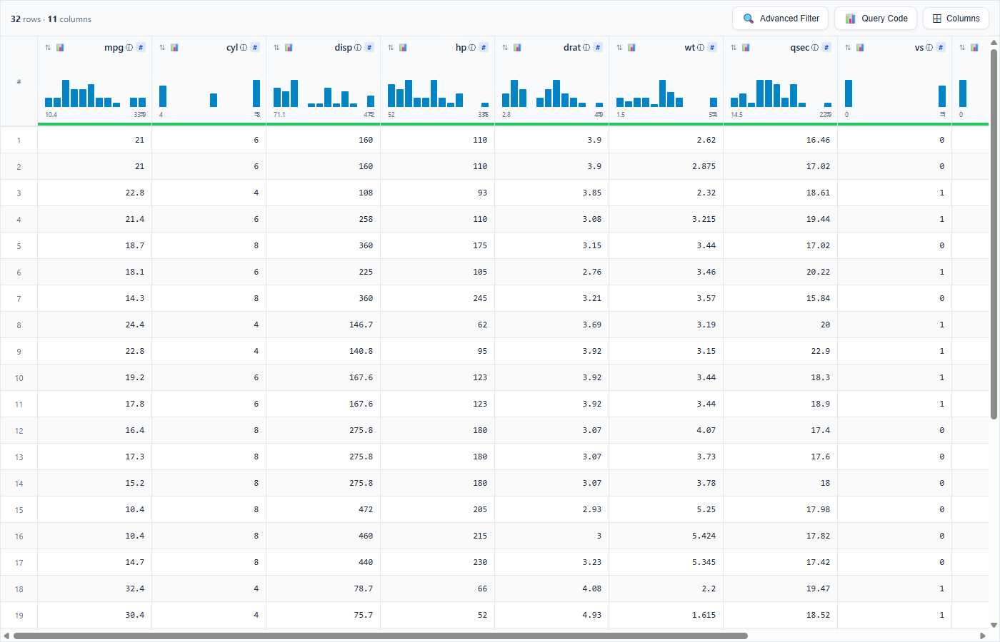
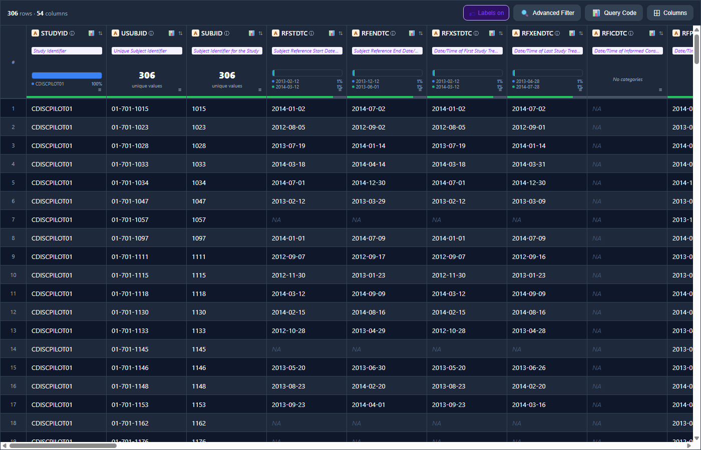
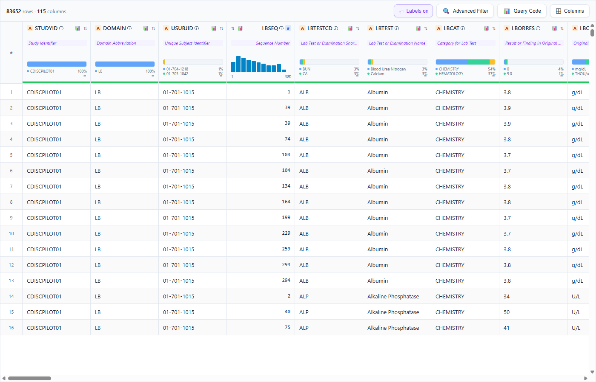
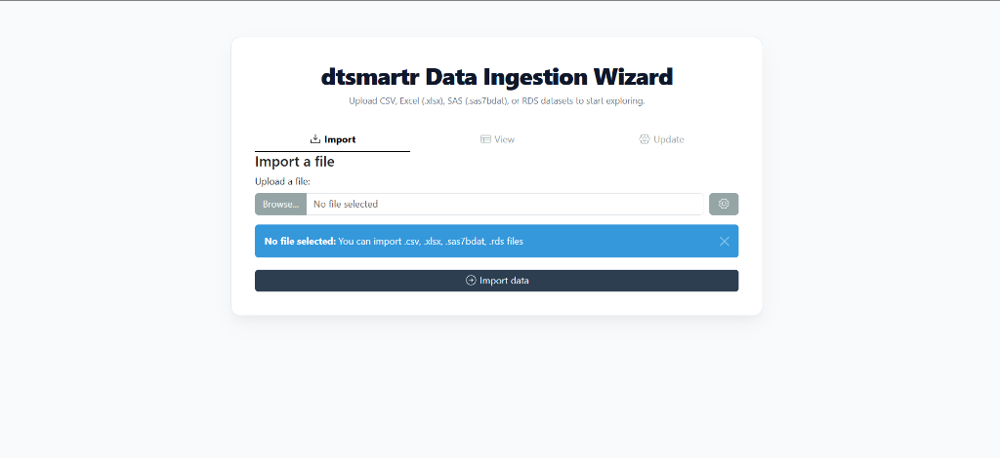
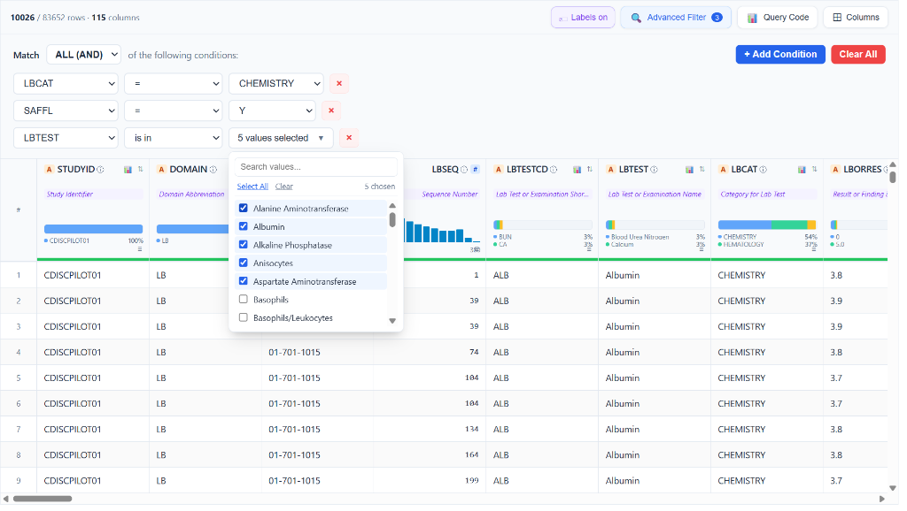
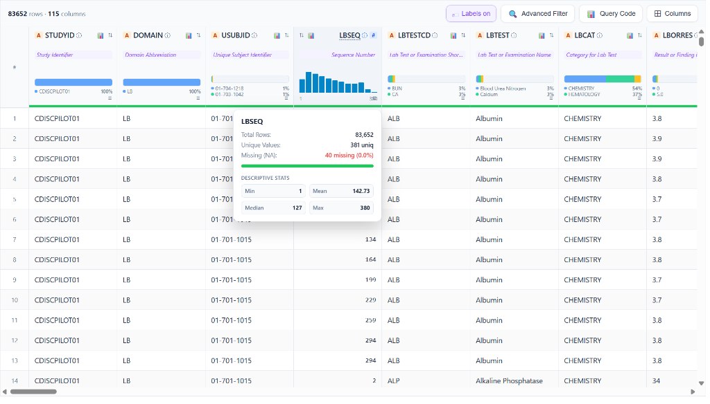
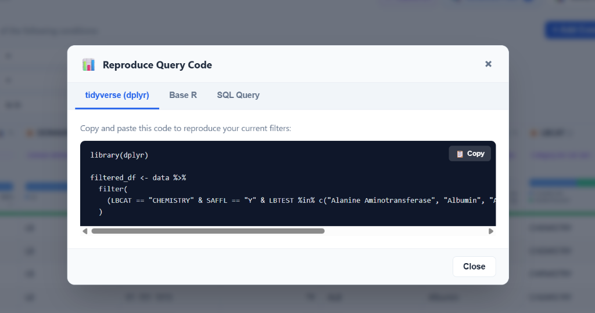
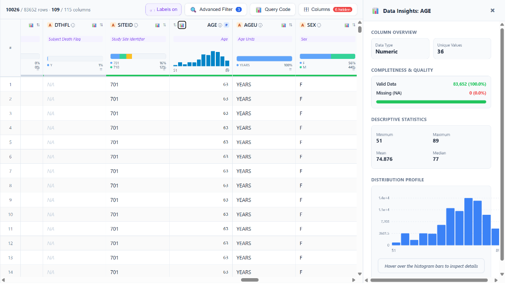
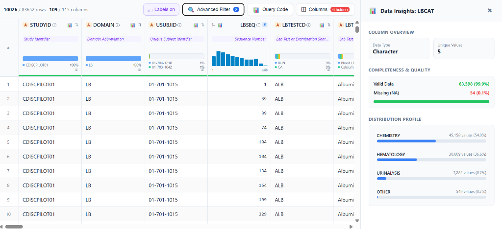

dtsmartr is an interactive, Kaggle-style data explorer widget for R. Built with modern React and htmlwidgets, it provides a high-fidelity, ultra-responsive virtualized grid to browse, sort, filter, and extract insights from large datasets seamlessly.
It is designed to work beautifully inside the RStudio/Positron Viewer pane, embedded within Shiny applications, rendered in R Markdown/Quarto documents, or exported as standalone, portable HTML files for offline sharing.
🌐 Documentation & Website
For full step-by-step guides, feature articles, and reference documentation, visit our official package website: 👉 https://wagh-nikhil.github.io/dtsmartr/
📦 Installation
Stable CRAN Version
You can install the stable release version of dtsmartr from CRAN:
install.packages("dtsmartr")Development Version (GitHub)
To install the latest development version containing all the modern features (such as Excel-style column resizing, text wrapping, and multi-column sorting) directly from GitHub:
# install.packages("devtools")
devtools::install_github("wagh-nikhil/dtsmartr")🎨 Visual Showcase (Real App Screenshots)
Below are actual, unretouched screenshots of dtsmartr in action, showing real dataset rendering and interactive visual metadata elements:
💡 Showcase 1: Premium Light Theme with Interactive Kaggle-Style Headers
Features mini distribution spark-histograms, type-safe data-type badges (like # for numeric), and column visibility pickers.

💡 Showcase 2: Sleek Dark Theme with Clinical Metadata & Variable Labels
Demonstrates full column labels inline, missingness progress bars (green/gray under the headers), active categories, and a professional dark palette perfect for low-light clinical analysis.

💡 Showcase 3: Virtualized Rendering of Massive Datasets (83,000+ Rows)
Shows real-time, lag-free scrolling across 83,652 rows and 115 columns of laboratory clinical data (pharmaverseadam::adlb). Top column headers and left row indexes remain perfectly sticky.

🖼️ Feature Gallery
🔌 Zero-Code Data Ingestion Wizard
Start the interactive ingestion wizard by running dtsmartr_launch() with no arguments (or using our one-click launchers). Designed specifically for non-programmers, it provides a beautiful drag-and-drop file uploader to ingest CSV, Excel (.xlsx), SAS (.sas7bdat), or RDS files. Once uploaded, users can inspect, verify, and custom-toggle column types/classes via the “View” and “Update” panels before feeding the clean dataset directly into the premium virtualized explorer grid!

🔎 Advanced Multi-Condition Query Builder
Build complex, multi-rule filters using Match ALL (AND) or Match ANY (OR) logic. Conditions support =, is in, contains, <, > operators with type-specific controls — including a searchable multi-select checklist dropdown for categorical columns (e.g. selecting 5 specific lab tests from LBTEST). The Advanced Filter badge shows the active filter count at a glance. Real-time row count (10026 / 83,652 rows) updates instantly as filters are applied.

💬 Column Metadata Tooltip Card (ⓘ)
Hovering over the ⓘ info icon next to any column name opens a floating metadata card with key statistics calculated directly from your dataset — no external dependencies required: - Total Rows and Unique Values count - Missing (NA) count with exact percentage - Descriptive Stats for numeric columns: Min, Mean, Median, Max — rendered inline in a clean 2×2 stat grid
This example shows the LBSEQ (Sequence Number) column across 83,652 rows, with 381 unique values and only 40 missing (0.0%), with Min = 1, Mean = 142.73, Median = 127, Max = 380.

📊 Reproducible Query Code Generator
Click the Query Code button to instantly generate copy-pasteable, production-ready R code that perfectly replicates your current filter and column state: - tidyverse (dplyr): Produces clean %>% filter() pipeline chains. - Base R: Generates standard bracket-subset expressions. - SQL Query: Generates portable ANSI SQL WHERE clauses.
The generator auto-substitutes your R variable name (e.g. data) and correctly formats %in% vector membership checks for multi-value is in conditions. A Copy button sends the entire block to the clipboard in one click.

📈 Data Insights Drawer — Numeric Column (Interactive SVG Histogram)
Click any column’s mini spark-histogram or the Data Insights icon to slide open the Data Insights side panel. For numeric columns, it renders a full-width, interactive SVG distribution histogram featuring: - Column Overview: Data type badge and unique value count - Completeness & Quality: Color-coded valid data / missing (NA) progress bar with exact row counts and percentages - Descriptive Statistics: Min, Max, Mean, Median in a clean 2×2 grid - Distribution Profile: Full-width SVG histogram with hover-to-inspect functionality and Y-axis gridlines
This example shows the AGE column across 83,652 rows: 100% complete, ages ranging from 51 to 89 years, Mean = 74.876, Median = 77.

📊 Data Insights Drawer — Categorical Column (Interactive Pareto Bar Chart)
For character/categorical columns, the Data Insights drawer renders a horizontal Pareto bar chart showing the distribution of the top categories with their exact value counts and percentages: - Column Overview: Data type badge and unique value count - Completeness & Quality: precise completeness metric (e.g. 99.9% valid / 0.1% missing) - Distribution Profile: Proportional horizontal bars for each category, labeled with exact category name, value count, and percentage
This example shows LBCAT (Lab Test Category) with 5 unique values across 83,598 valid rows: CHEMISTRY (54.0%), HEMATOLOGY (36.6%), URINALYSIS (8.7%), and OTHER (0.7%).

🚀 Key Features
1. High-Fidelity Virtualized Layout & Clinical Readability
- Virtualized Grid Rendering: Renders massive datasets (e.g., thousands of rows and high-dimensional clinical tables) instantly by only painting visible cells in the viewport, ensuring zero lag.
- Sticky Coordinates: Keeps top column headers and left row indices perfectly aligned and sticky during horizontal and vertical scrolling.
-
Clinical Alignment & Fonts: strictly right-aligns all numeric column headers and cell values (using clean, monospace fonts like
ConsolasandFira Codefor numerical scanning) and left-aligns character columns. It automatically reverses the layout flex-direction for numeric headers to keep icons and labels beautifully balanced. -
Sticky Row Pinning: Click any row to lock/pin it with a distinct soft-gold highlight and a persistent sticky pin
📌badge in the row index column, keeping vital subjects or records in view while scrolling across dozens of variables. -
Missing Value Handling: Represents missing values (
NA/null) in elegant, italicized, muted-gray cells, with customizable placeholder string support (na_string).
2. Kaggle-Style “Micro-Dashboard” Column Headers
-
Missingness Progress Bar: Renders a thin, color-coded progress bar at the very bottom of each header cell representing data completeness (Green: >95% complete, Amber: 50–95%, Muted Gray: <50%). Hovering displays a precise tooltip:
“{totalRows} values • {naCount} missing ({naPct}%)”. -
Mini Spark-Histograms:
- Numeric/Datetime: Renders a mini bar histogram showing the distribution profile with min and max labels.
- Character/Categorical: Renders a color-coded mini horizontal stacked bar showing the top 3 most frequent categories, complete with a visual legend of the top 2 categories and their exact percentages.
-
Expanded Metadata Info Cards: Tap the subtle
ⓘinfo icon next to any column name to open a detailed summary tooltip card showing total rows, unique values, and missing counts, along with:- For Numeric: Min, Mean, Median, and Max values (resolving the common median calculation bug).
- For Character/Categorical: A beautifully styled HTML table detailing the Top 5 most frequent string values with exact counts and percentage breakdowns.
3. Collapsible Data Insights Side-Panel
-
Interactive SVG Visualizations: Click the mini histogram inside any column header or detailed info card to slide open the collapsible
DataInsightsDrawerside panel. - Interactive Histogram (Numeric): A full-sized distribution chart featuring dashed background gridlines, X/Y axes with numeric labels, and interactive hover bins. Hovering a bin highlights it and renders a tooltip showing its exact range, count, and percentage.
- Interactive Pareto Bar Chart (Categorical): A beautiful wide-bar chart displaying the Top 5 to 10 categories, complete with hover highlights and detailed frequency tooltips.
4. Advanced Multi-Condition Query Builder
-
Dynamic Logical Rules: Combine multiple advanced query conditions using global
Match ALL (AND)orMatch ANY (OR)connectors. -
Searchable Checkbox Dropdowns: The
is inandis not inoperators render a searchable checklist panel with helper links (Select AllandClear) to perform multi-category selection effortlessly. - Type-Specific Controls: Numeric fields offer number inputs, datetime fields present interactive calendar date-pickers, and character fields use text search.
5. Reproducible Query Code Generator
- One-Click Code Modal: Tap the 📊 Query Code button to reveal a tabbed modal generating the exact copy-pasteable code needed to replicate your active filter and column state.
- Supported Syntaxes: Outputs clean tidyverse (dplyr) pipelines, Base R subset operations, standard ANSI SQL Queries, Arrow collections, and DuckDB / dbplyr queries.
-
Active Column Projections: If columns are hidden in the grid, the code generators dynamically append column selection projections (dplyr
select(), Base R arguments, SQL lists, etc.) to project only visible column subsets. -
Variable Name Auto-Extraction: Automatically deparses and substitutes the R variable name (e.g.
adsloradlb) for copy-pasteable accuracy.
6. Zero-Code Data Ingestion Wizard & Performance Safeguards
-
Ingestion Wizard: Launch
dtsmartr_launch()withdata = NULLto start an interactive file upload wizard powered bydatamods. Drag and drop CSV, Excel, SAS datasets, or RDS files, verify column classes, and explore them instantly in a full-screen grid interface. -
Automatic Viewer Cap Protection: If a dataset exceeds 50,000 rows,
dtsmartr()automatically reroutes rendering in interactive sessions todtsmartr_launch()in an external browser, preventing RStudio or Positron IDE viewer pane freeze-ups. It gracefully warns and renders in-place if called inside a running Shiny app session.
📦 Installation
You can install the development version of dtsmartr directly from GitHub:
# Install remotes if not already installed
if (!requireNamespace("remotes", quietly = TRUE)) {
install.packages("remotes")
}
# Install dtsmartr
remotes::install_github("wagh-nikhil/dtsmartr")⚡ Quick Start
1. Basic Interactive Data Browsing
Open any data frame in your default RStudio or Positron Viewer panel:
2. Clinical Dataset Exploration with Labels and Formatting
dtsmartr extracts R variable label attributes (commonly used in clinical data like ADaM datasets) and renders them inline inside the headers.
library(dtsmartr)
library(pharmaverseadam)
# Explore Subject-Level Analysis Dataset (ADSL) with labels and active picker
dtsmartr(
data = adsl,
options = dtsmartr_options(
theme = "auto", # Adapts to IDE or system light/dark settings
show_labels = TRUE, # Displays labels (e.g. "Age", "Race", "Study Identifier")
na_string = "—" # Cleaner missing value indicator
)
)3. Launch Ingestion Wizard (Bypassing CORS & Freezes)
To start the file ingestion wizard or explore massive datasets in an external browser session:
library(dtsmartr)
# 1. Start the zero-code ingestion wizard to drag-and-drop local files (CSV, XLSX, SAS, RDS)
dtsmartr_launch()
# 2. Explore a large dataset directly in your default browser
dtsmartr_launch(pharmaverseadam::adsl)🖱️ One-Click & One-Line Launchers (For Zero-R / Non-R Users)
You don’t need to know R to benefit from dtsmartr! The package includes three highly accessible, zero-code launching methods designed specifically for non-programmers, business analysts, or clinical researchers who prefer a simple click-and-run setup:
1. 🎯 The RStudio Add-in (One-Click GUI Solution)
Once the dtsmartr package is installed, a new launcher is registered directly in RStudio’s top toolbar: - Click the Addins dropdown menu in RStudio. - Select dtsmartr Data Explorer Wizard. - It immediately boots the Data Ingestion Wizard in your default web browser. No console typing required!
2. 💻 System Command-Line One-Liner (Terminal Solution)
Launch the wizard directly from your system’s Command Prompt (Windows) or Terminal (macOS/Linux) without launching R manually:
⚡ 3. Desktop Shortcut Launcher (Double-Click Solution)
You can create a standalone Desktop shortcut to run dtsmartr like a native desktop app: - Windows: Create a text file named dtsmartr_explorer.bat on your Desktop with these two lines: batch @echo off "C:\Program Files\R\R-4.4.3\bin\x64\Rscript.exe" -e "dtsmartr::dtsmartr_launch()" (If your R version is different, simply replace the path above with your Rscript.exe location or standard Rscript if it is in your system PATH). - macOS / Linux: Create a shell script named dtsmartr_explorer.sh on your Desktop: bash #!/bin/bash Rscript -e "dtsmartr::dtsmartr_launch()" (Make it executable with chmod +x ~/Desktop/dtsmartr_explorer.sh)
Now, any team member can just double-click the desktop icon to instantly launch the secure local data browser, upload a CSV or Excel spreadsheet, and analyze it with premium aesthetics and visualizations!
💾 Saving HTML Reports & Avoiding Self-Contained Bloat
save_dtsmartr() exports any dataset as an interactive HTML grid report. The saved file runs completely offline in any browser without needing R or an active internet connection.
library(dtsmartr)
# Save mtcars as a fully self-contained portable HTML report
save_dtsmartr(
data = mtcars,
file = "outputs/mtcars_report.html",
options = dtsmartr_options(hidden_columns = "hp"),
open = TRUE
)💡 How to Avoid Self-Contained Data Bloat (selfcontained = FALSE)
By default, save_dtsmartr() embeds all JavaScript libraries, CSS assets, and data directly inside the HTML file (selfcontained = TRUE), which requires Pandoc.
For large datasets (e.g., thousands of rows) or environments without Pandoc, setting selfcontained = FALSE is highly recommended. This saves memory and outputs a lightweight HTML file alongside a companion directory containing the shared JS/CSS dependencies.
library(dtsmartr)
library(pharmaverseadam)
# Save large ADLB clinical labs dataset without self-contained bloat
save_dtsmartr(
data = adlb,
file = "outputs/adlb_report.html",
selfcontained = FALSE, # Writes JS/CSS to 'outputs/adlb_report_files/'
open = TRUE # Opens resolved HTML in default browser
)| Parameter State | Output Files | Best Used For |
|---|---|---|
selfcontained = TRUE (default) |
A single, portable .html file |
Email attachments and easy folder sharing. |
selfcontained = FALSE |
A lightweight .html file + <file>_files/ companion directory |
Large datasets (>20k rows), bulk exports, and systems without Pandoc installed. |
[!NOTE]
save_dtsmartr()passesskip_routing = TRUEinternally to the main widget engine. This guarantees that large datasets likeadlb(83k+ rows) are successfully written to disk as widget export files, bypassing the automatic external browser re-routing safeguard.
🛠️ Function Reference
dtsmartr_options(advanced_filter = TRUE, show_labels = TRUE, column_picker = TRUE, allow_export = TRUE, theme = "auto", na_string = "NA", hidden_columns = NULL)
Helper function to customize UI display panels, themes, and default states. - advanced_filter: Logical. Toggles advanced logical multi-condition query builder. - show_labels: Logical. If TRUE, displays column attributes (like label description) inline in headers. - column_picker: Logical. Displays column dropdown selector toggle. - allow_export: Logical. Displays reproducible code query generation button. - theme: UI appearance theme. Options are "auto", "light", or "dark". - na_string: Custom character string representing missing cells (defaults to "NA"). - hidden_columns: Character vector of column names to hide by default on initial render.
dtsmartr(data, width = NULL, height = NULL, elementId = NULL, datasetName = NULL, options = dtsmartr_options(), skip_routing = FALSE)
Creates the interactive virtualized htmlwidget grid. - data: A data.frame to explore. - width / height: Explicit widget dimensions. Defaults to full page container (100%). - elementId: Optional static container ID. - datasetName: Custom string representing the dataset in generated reproducible queries. - options: Custom options list built using dtsmartr_options(). - skip_routing: Logical. Internal bypass flag used by save_dtsmartr() to prevent >50k row routing.
dtsmartr_launch(data = NULL, port = NULL, options = dtsmartr_options())
Spins up a temporary local background Shiny server to serve the grid or file upload uploader wizard in your default browser. - data: A data.frame to explore, or NULL (default) to start the file uploader wizard. - port: Optional numeric port. - options: UI options constructed via dtsmartr_options().
save_dtsmartr(data, file, selfcontained = TRUE, title = "dtsmartr", open = FALSE, background = "white", libdir = NULL, width = NULL, height = NULL, elementId = NULL, options = dtsmartr_options(), verbose = TRUE)
Exports a data.frame as a fully interactive, standalone offline HTML file. - data: A data.frame to explore. - file: Path to the output HTML file. - selfcontained: Logical. When TRUE (default), bundles all resources. When FALSE, creates a companion directory next to the file. - title: Browser window / tab title. - open: Logical. Open in default browser immediately after saving in interactive sessions. - options: Custom options list built using dtsmartr_options().
💻 Developer Setup (Rebuilding React Assets)
The frontend is implemented in React inside srcjs/dtsmartr.jsx and compiled with Webpack. To compile frontend changes:
# Navigate into the package directory
cd dtsmartr
# Install NodeJS dependencies
npm install
# Compile React resources into inst/htmlwidgets/dtsmartr.js
npm run buildInside R, re-generate documentation, namespaces, and re-install:
# Generate Rd manuals and NAMESPACE
devtools::document()
# Install the package locally
devtools::install()📄 License
This package is licensed under the MIT License - see the LICENSE file for details.